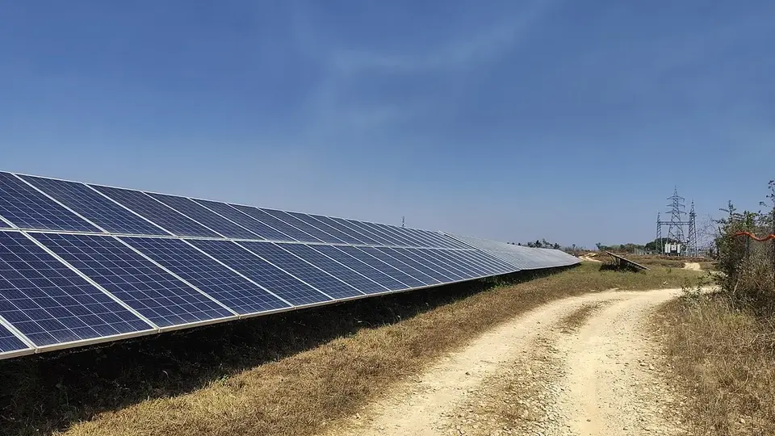

मागेल त्याला सौर कृषी पंप योजना
Magel Tyala Saur Krushi Pump — Maharashtra's 90% Solar Pump Subsidy
पंप सूरज से चलेगा, इसलिए पानी दिन में मिलेगा और बिजली का बिल आएगा ही नहीं। सर्वसाधारण किसान को कुल लागत का सिर्फ़ 10% भरना है, SC/ST किसान को सिर्फ़ 5%।
✍️ Kunal Rajput — KrashiMitra⏱️ 9 मिनट पढ़ें📅 अगस्त 2026

भारत में लगे सोलर पैनल — सौर कृषी पंप ऐसे ही पैनल सेट से सीधे चलता है, बिजली की तार से नहीं।
रात की पाळी ख़त्म — पानी अब दिन में
☀️
10%
सर्वसाधारण किसान का हिस्सा
⚙️
3–7.5 HP
ज़मीन के हिसाब से
💧
पानी
स्रोत बिना अर्ज ख़ारिज
📖
भूमिका
रात के दो बजे टॉर्च लेकर खेत में पानी देने जाना — महाराष्ट्र के लाखों किसानों की यह रोज़ की मजबूरी है, क्योंकि कृषि पंप को बिजली अक्सर रात की पाळी में ही मिलती है। मागेल त्याला सौर कृषी पंप योजना इसी समस्या पर बनी है: पंप सूरज से चलेगा, इसलिए पानी दिन में मिलेगा — और बिजली का बिल बिल्कुल नहीं आएगा।
सबसे अहम बात रकम की है। इस योजना में सर्वसाधारण वर्ग के किसान को पंप की कुल लागत का सिर्फ़ 10% देना होता है, और अनुसूचित जाति/जमाती के किसान को सिर्फ़ 5% — बाक़ी सब अनुदान है। इस लेख में — कौन पात्र है, कितने HP का पंप मिलेगा, अर्ज कहाँ करें, कागज़ात क्या लगते हैं और किन बातों में लोग फँसते हैं — सब आसान हिंदी में।
विज्ञापन
🔍
यह योजना है क्या?
महाराष्ट्र सरकार और महावितरण (MSEDCL) मिलकर किसानों को ऑफ़-ग्रिड सौर कृषी पंप देते हैं। “ऑफ़-ग्रिड” का मतलब है — यह पंप बिजली की तार से जुड़ा ही नहीं होता। उसके साथ सोलर पैनल का सेट लगता है, और पंप सीधे उसी से चलता है।
नाम में ही योजना का वादा है — “मागेल त्याला” यानी जो माँगेगा, उसे मिलेगा। पहले की सौर पंप योजनाओं में सीमित कोटा होता था; यहाँ लक्ष्य है कि हर पात्र किसान को पंप मिले। यह योजना केंद्र की पीएम-कुसुम और राज्य के मुख्यमंत्री सौर कृषी वाहिनी कार्यक्रम के साथ चलती है, पर अर्ज और अनुदान की व्यवस्था अपनी अलग है।
💡
सबसे बड़ा फ़ायदा बिल का नहीं, समय का है। सौर पंप दिन में चलता है, जब आप वैसे भी खेत में होते हैं। रात की पाळी में सिंचाई करने से साँप-बिच्छू का ख़तरा, ज़्यादा पानी बह जाना और मोटर जलने की घटनाएँ — तीनों घटती हैं।
💰
कितना अनुदान, कितना आपका हिस्सा
किसान की श्रेणी
अनुदान
किसान का हिस्सा (लाभार्थी वाटा)
सर्वसाधारण वर्ग
लगभग 90%
10%
अनुसूचित जाति (SC)
लगभग 95%
5%
अनुसूचित जमाती (ST)
लगभग 95%
5%
बाक़ी रकम केंद्र और राज्य सरकार मिलकर देते हैं। किसान को सिर्फ़ अपना हिस्सा ऑनलाइन भरना होता है — पूरा पैसा लगाकर बाद में अनुदान का इंतज़ार नहीं करना पड़ता, जैसा कई दूसरी योजनाओं में होता है।
⚠️
पंप की कुल लागत HP और उस साल की निविदा दर पर तय होती है, इसलिए “मेरा हिस्सा कितने रुपये बनेगा” यह हर साल और हर क्षमता के लिए अलग होता है। अपनी सही रकम महावितरण पोर्टल के कोटेशन या नज़दीकी महावितरण उपविभागीय कार्यालय से ही पक्की करें।
विज्ञापन
⚙️
कितने HP का पंप मिलेगा — ज़मीन के हिसाब से
पंप की क्षमता आप नहीं चुनते; वह आपकी धारित ज़मीन के हिसाब से तय होती है।
ज़मीन (धारण क्षेत्र)
पंप की क्षमता
2.5 एकड़ तक
3 HP
2.51 से 5 एकड़
5 HP
5 एकड़ से ज़्यादा
7.5 HP
यानी अगर आपके पास तीन एकड़ है, तो 7.5 HP माँगने का कोई फ़ायदा नहीं — अर्ज उसी स्लैब में जाएगा जिसमें आपका 7/12 बैठता है।
✅
कौन पात्र है
पानी का पक्का स्रोत होना चाहिए: कुआँ, बोरवेल, बारमाही नदी-नाला, शेततळे या नहर — कुछ न कुछ ऐसा जिसमें सिंचाई लायक़ पानी हो। यही पहली और सबसे कड़ी शर्त है।
पारंपरिक बिजली कनेक्शन नहीं होना चाहिए: यह योजना उन खेतों के लिए है जहाँ कृषी पंप का बिजली कनेक्शन नहीं है।
ज़मीन आपके नाम पर हो: 7/12 पर नाम दर्ज होना ज़रूरी है; साझा ज़मीन पर अन्य खातेदारों का संमति पत्र लगता है।
पहले किसी सौर पंप योजना का लाभ न लिया हो: एक ही किसान को दोबारा नहीं मिलता।
बिजली कनेक्शन के लिए पैसे भरकर इंतज़ार कर रहे किसान: ऐसे प्रलंबित आवेदकों को अक्सर प्राथमिकता दी जाती है — अपने कार्यालय से पुष्टि करें।
💧
पानी की जाँच सबसे पहले कीजिए। सौर पंप दिन में ही चलता है और उसकी डिस्चार्ज क्षमता सीमित होती है। अगर बोरवेल गर्मियों में सूख जाता है, तो पंप लगने के बाद भी समस्या वैसी ही रहेगी। ऐसे में पहले शेततळे या जल संधारण पर काम कीजिए।
🖥️
अर्ज कैसे करें — कदम दर कदम
पोर्टल खोलें: महावितरण की वेबसाइट mahadiscom.in पर “Magel Tyala Saur Krushi Pump” वाला पन्ना खोलें (सीधा पता: mahadiscom.in/solar_MTSKPY)।
“Beneficiary Services” में Apply चुनें: यहीं नया अर्ज भरने का विकल्प मिलता है।
ब्योरा भरें: नाम, आधार, मोबाइल, ज़िला-तालुका-गाँव, गट/सर्वे नंबर, धारित क्षेत्र और पानी के स्रोत का प्रकार।
कागज़ात अपलोड करें: 7/12, आधार, बैंक पासबुक, फ़ोटो और ज़रूरत हो तो जाति प्रमाण पत्र व संमति पत्र।
अर्ज क्रमांक सहेजें: जमा करने के बाद मिलने वाला क्रमांक ही आगे स्टेटस देखने की चाबी है।
सर्वेक्षण होने दें: कंपनी या महावितरण का प्रतिनिधि खेत पर आकर पानी का स्रोत और जगह देखता है।
अपना हिस्सा (10% या 5%) भरें: मंज़ूरी के बाद कोटेशन आता है; रकम ऑनलाइन ही भरें और रसीद सहेजें।
पंप लगवाएँ: नियुक्त एजेंसी पैनल, पंप और नियंत्रक लगाकर चालू करके देती है। इंस्टॉलेशन के बाद वारंटी काग़ज़ ज़रूर लें।
⚠️
अपना हिस्सा कभी नक़द में किसी व्यक्ति को न दें। रकम पोर्टल के ज़रिए ही जमा होती है और उसकी ऑनलाइन रसीद मिलती है। “जल्दी नंबर लगवा देंगे” कहकर नक़द माँगने वाले हर व्यक्ति से दूर रहें।
📊
सौर पंप बनाम बिजली वाला पंप
बिंदु
✅ सौर कृषी पंप
❌ पारंपरिक बिजली पंप
पानी कब मिलेगा
दिन में, धूप रहते
अक्सर रात की पाळी में
बिजली बिल
कुछ नहीं
हर महीने, बकाया बढ़ता जाता है
लोड शेडिंग / भारनियमन
असर नहीं
सीधा असर
वोल्टेज उतार-चढ़ाव से मोटर जलना
बहुत कम
आम समस्या
बादल वाले दिन
पानी कम निकलता है
बिजली आए तो फ़र्क़ नहीं
रात में सिंचाई
संभव नहीं (बिना बैटरी)
संभव
चोरी का ख़तरा
पैनल की सुरक्षा करनी पड़ती है
कम
यानी सौर पंप हर मामले में बेहतर नहीं है — बादल वाले दिनों में डिस्चार्ज गिरता है और रात में सिंचाई नहीं हो सकती। इसीलिए इसे ठिबक या तुषार सिंचन के साथ जोड़ने पर सबसे ज़्यादा फ़ायदा होता है: कम पानी, कम समय, ज़्यादा क्षेत्र।
🚫
ये गलतियाँ कभी न करें
पानी का पक्का स्रोत बताए बिना अर्ज करना — सर्वेक्षण में यही सबसे पहले जाँचा जाता है और यहीं सबसे ज़्यादा अर्ज ख़ारिज होते हैं।
किसी दलाल को नक़द देना — लाभार्थी हिस्सा पोर्टल पर ऑनलाइन ही भरना होता है, और उसकी रसीद मिलती है।
पैनल की सुरक्षा न करना — खुले खेत में लगे सोलर पैनल चोरी होते हैं। ढाँचा मज़बूत करवाइए और गाँव में जानकारी रखिए।
पैनल की सफ़ाई भूल जाना — धूल जमी पैनल की क्षमता काफ़ी घटा देती है। हर 15-20 दिन में साफ़ पानी से पोंछना पड़ता है।
पैनल पर पेड़ की छाया आने देना — दोपहर में थोड़ी-सी छाया भी पानी की धार घटा देती है। जगह चुनते समय यह देखिए।
वारंटी काग़ज़ न लेना — पंप, नियंत्रक और पैनल की वारंटी अवधि और सर्विस का ब्योरा लिखित में लीजिए।
बड़े HP की उम्मीद रखना — क्षमता आपकी ज़मीन के स्लैब से तय होती है, माँग से नहीं।
🗓️
कब क्या करें
चरण
ज़रूरी काम
अर्ज से पहले
पानी का स्रोत, 7/12, आधार-लिंक्ड बैंक खाता और संमति पत्र तैयार रखें
अर्ज करते समय
गट नंबर और धारित क्षेत्र 7/12 से मिलाकर ही भरें
सर्वेक्षण के दिन
ख़ुद खेत पर मौजूद रहें, पानी का स्रोत दिखाएँ, पैनल की जगह तय करें
मंज़ूरी मिलते ही
अपना हिस्सा ऑनलाइन भरें और रसीद सहेजें
इंस्टॉलेशन के दिन
पंप चलाकर देखें, वारंटी काग़ज़ और सर्विस नंबर लें
हर 15-20 दिन
पैनल साफ़ करें — यह सीधे पानी की धार बढ़ाता है
हर मौसम से पहले
तार, नियंत्रक और पाइप की जाँच करवाएँ
✅
निष्कर्ष
तीन बातें याद रखिए। पहली — किसान को सिर्फ़ 10% (SC/ST को 5%) भरना है, बाक़ी अनुदान है, और रकम ऑनलाइन ही जमा होती है। दूसरी — पंप की क्षमता ज़मीन से तय होती है: 2.5 एकड़ तक 3 HP, 5 एकड़ तक 5 HP, उससे ऊपर 7.5 HP। तीसरी — पानी का पक्का स्रोत ही असली शर्त है; बाक़ी सब काग़ज़ी काम है।
दिन में पानी, बिल शून्य — पर पैनल की सफ़ाई और सुरक्षा अब आपकी ज़िम्मेदारी है।
⚠️
अनुदान की दरें, पंप की लागत, पात्रता की शर्तें और अर्ज की विंडो शासन निर्णय से बदलती रहती हैं। अंतिम जानकारी हमेशा mahadiscom.in के आधिकारिक पन्ने या अपने नज़दीकी महावितरण उपविभागीय कार्यालय से ही पक्की करें। कृषि मित्र न कोई एजेंट है, न किसी का अर्ज भरता है।
विज्ञापन
❓
अक्सर पूछे जाने वाले सवाल
1मागेल त्याला सौर कृषी पंप योजना में कितना पैसा भरना पड़ता है?
सर्वसाधारण वर्ग के किसान को पंप की कुल लागत का सिर्फ़ 10% भरना होता है, और अनुसूचित जाति/जमाती के किसान को सिर्फ़ 5% — बाक़ी रकम केंद्र और राज्य सरकार अनुदान के रूप में देते हैं। यह हिस्सा महावितरण के पोर्टल पर ऑनलाइन ही जमा किया जाता है, किसी को नक़द नहीं।
2कितने एकड़ पर कितने HP का सौर पंप मिलता है?
पंप की क्षमता ज़मीन से तय होती है — 2.5 एकड़ तक 3 HP, 2.51 से 5 एकड़ तक 5 HP, और 5 एकड़ से ज़्यादा पर 7.5 HP। यानी किसान अपनी मर्ज़ी से बड़ा पंप नहीं चुन सकता; अर्ज उसी स्लैब में जाता है जिसमें उसका 7/12 बैठता है।
3सौर कृषी पंप योजना के लिए अर्ज कहाँ करें?
अर्ज महावितरण (MSEDCL) के पोर्टल mahadiscom.in पर “Magel Tyala Saur Krushi Pump” वाले पन्ने से किया जाता है — सीधा पता mahadiscom.in/solar_MTSKPY। वहाँ “Beneficiary Services” में जाकर Apply चुनिए, ब्योरा भरिए और कागज़ात अपलोड कर दीजिए।
4सौर कृषी पंप के लिए बिजली कनेक्शन होना जरूरी है क्या?
उल्टा — यह योजना उन्हीं खेतों के लिए है जहाँ कृषी पंप का पारंपरिक बिजली कनेक्शन नहीं है। यह ऑफ़-ग्रिड योजना है, यानी पंप बिजली की तार से जुड़ता ही नहीं। जिन किसानों ने कनेक्शन के लिए पैसे भरकर लंबे समय से इंतज़ार किया है, उन्हें अक्सर प्राथमिकता दी जाती है।
5सौर कृषी पंप के लिए कौन से कागज़ात लगते हैं?
मुख्यतः 7/12 उतारा, आधार कार्ड, आधार-लिंक्ड बैंक पासबुक और पासपोर्ट साइज़ फ़ोटो। साझा (सामाईक) 7/12 हो तो अन्य खातेदारों का संमति पत्र, और SC/ST श्रेणी के लिए जाति प्रमाण पत्र भी चाहिए। साथ ही पानी के स्रोत का ब्योरा देना पड़ता है।
6क्या सौर पंप रात में चलता है?
नहीं — बिना बैटरी वाला सौर पंप सिर्फ़ धूप में चलता है। यही इसकी सबसे बड़ी सीमा है, और सबसे बड़ा फ़ायदा भी: सिंचाई दिन में करनी पड़ती है, रात की पाळी का इंतज़ार ख़त्म हो जाता है। बादल वाले दिनों में पानी की धार कम रहती है, इसलिए इसे ठिबक या तुषार सिंचन के साथ जोड़ना सबसे अच्छा रहता है।
7सौर पंप का अर्ज किस वजह से सबसे ज्यादा रद्द होता है?
पानी का पक्का स्रोत न होने की वजह से। सर्वेक्षण में यही सबसे पहले जाँचा जाता है — कुआँ, बोरवेल, बारमाही नदी-नाला, शेततळे या नहर में सिंचाई लायक़ पानी होना ज़रूरी है। दूसरी आम वजह है 7/12 और अर्ज में गट नंबर या क्षेत्रफल का मेल न खाना।
8सौर पंप लगने के बाद रखरखाव में क्या करना पड़ता है?
सबसे ज़रूरी काम है हर 15-20 दिन में पैनल साफ़ पानी से पोंछना — जमी धूल पानी की धार काफ़ी घटा देती है। इसके अलावा पैनल पर पेड़ की छाया न आने दें, ढाँचा मज़बूत रखें ताकि चोरी न हो, और हर मौसम से पहले तार, नियंत्रक तथा पाइप की जाँच करवा लें।
🌾
KrashiMitra.in — आपका विश्वसनीय कृषि साथी
मंडी भाव, सरकारी योजनाएं, बीज-खाद की जानकारी और फसल रोग उपचार — सब कुछ हिंदी में।